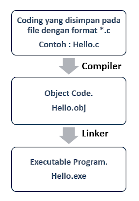

Dalam konteks bahasa pemrograman, "translator" biasanya merujuk kepada program atau perangkat lunak yang mengubah kode sumber dari satu bahasa pemrograman ke bahasa pemrograman lain.
Ada 2 jenis translator utama pada bahasa pemrograman, yaitu Compiler dan Interpreter.
~ Compiler adalah jenis translator yang menerjemahkan seluruh kode sumber dalam satu kali proses ke dalam bahasa mesin atau kode antara (intermediate code).
~ Compiler menghasilkan file biner atau kode antara yang dapat dieksekusi secara langsung oleh komputer.
~ Contoh bahasa yang menggunakan compiler adalah C, C++, dan Ada.
Interpreter adalah jenis translator yang membaca dan mengeksekusi kode sumber baris demi baris saat program berjalan. Ini berarti kode sumber tidak diterjemahkan ke dalam bahasa mesin atau kode antara sebelum dieksekusi.
Contoh bahasa yang menggunakan interpreter adalah Python, JavaScript, dan Ruby.
Tugas dari linker adalah menggabungkan berbagai library external dengan object file untuk menghasilkan sebuah program.
Jadi pertama-tama Code / Codingan dalam Bahasa C yang kita buat haruslah disimpan dengan format .c, misalnya Hello.c.
Yang kemudian file ini lah yang akan di compile oleh compiler sehingga menjadi file Hello.obj yang berisi object code (Bahasa Assembly).
File .obj inilah yang akan dihubungkan oleh linker dengan library external untuk menghasilkan sebuah program dengan format .exe seperti Hello.exe.